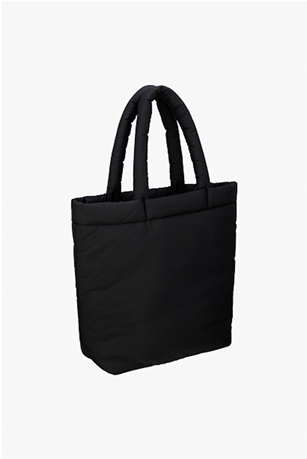
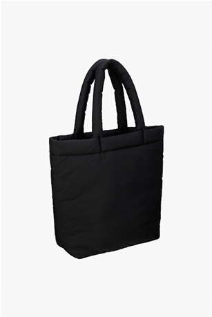

Identity by MSM paris Photography by Jaime Hakesworth
Short movie directed by BYNT Script by David Scearce Produced by Canada
inspired by Vivaldi´s four seansons
Picture by Jamie Hakesworth ZARA ORIGINS collection Tappei

ZARA ORIGINS
#Permanent Collection
Zara Origins is a project focused upon building a contemporary wardrobe.
The aim is to conceive, create and offer garments which are newly-refined
archetypes of their kind, fabricated in the finest materials, and manufactured with high standards of expertise and craft. It harnesses progressive desing to combine modern concepts with outstanding valve.


When Zara Origins launched its first two collection for the winter and summer seasons, the constantly evoluing project was defined by thes statement. After two editions allowing for experimentation within the collection, the approach for the third editon has evolved naturally solidifying Zara Origins as a yearlong offering of wardrobe essentials that will be supplemented with limited edition seasonal piece.

When Zara Origins launched its first two collection for the winter and summer seasons, the constantly evoluing project was defined by thes statement. After two editions allowing for experimentation within the collection, the approach for the third editon has evolved naturally solidifying Zara Origins as a.
When Zara Origins launched its first two collection for the winter and summer seasons, the constantly evoluing project was defined by thes statement. After two editions allowing for experimentation within the collection, the approach for the third editon has evolved naturally solidifying Zara Origins as a yearlong offering of wardrobe essentials.When Zara Origins .
When Zara Origins launched its first two collection for the winter and summer seasons, the constantly evoluing project was defined by thes statement. After two editions allowing for experimentation within the collection, the approach for the third editon has evolved naturally solidifying Zara Origins as a.

 
